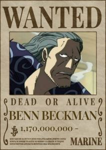
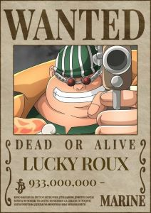
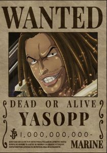

<div class="container">
  <article>
    <h2>Shanks - Ruivo</h2>
    
    <p>
      Shanks é um dos Yonkou em One Piece, conhecido por sua calma e grande
      carisma. Seu sonho é um mistério, mas ele valoriza a liberdade e a
      amizade. Shanks é o responsável por inspirar Monkey D. Luffy a se tornar
      um pirata e deu a ele o chapéu de palha que se tornou seu símbolo. Até o
      momento atual, ele continua a ser uma figura influente nos mares, mantendo
      relações diplomáticas com outras potências e exercendo sua influência para
      manter a paz.
    </p>

    <h2>Chapéu de Palha</h2>
    
    <p>
      O Chapéu de Palha foi inicialmente usado por Gol D. Roger, o lendário Rei
      dos Piratas, que é uma figura de grande importância na história de "One
      Piece". Após sua execução, o chapéu foi mantido por seu antigo
      companheiro, Shanks, que o considera um símbolo do espírito livre e da
      jornada épica de Roger. Como um gesto de confiança e reconhecimento do
      potencial de Luffy, Shanks passa o Chapéu de Palha para ele quando se
      despedem. Esse ato é um símbolo de herança, amizade e inspiração. Luffy
      aceita o chapéu com gratidão e determinação, assumindo a responsabilidade
      de realizar seus sonhos e honrar a promessa que fez a Shanks.
    </p>

    <h2>Bando dos Piratas Ruivo</h2>
    
    <p>
      Os Piratas do Ruivo, liderados pelo carismático Capitão Shanks, são uma
      das tripulações mais proeminentes e reverenciadas em "One Piece". Seu
      renome é sustentado por uma combinação de poder, integridade e influência
      que os eleva ao topo do mundo pirata. O espírito de camaradagem e lealdade
      entre os membros é uma marca registrada dos Piratas do Ruivo. Eles
      compartilham um profundo respeito uns pelos outros, especialmente por seu
      capitão, Shanks, cuja autoridade é aceita e reverenciada por todos.
    </p>
    <p>
      A reputação dos Piratas do Ruivo se estende muito além das fronteiras do
      Novo Mundo. Eles têm o poder de influenciar até mesmo os eventos globais,
      com membros como Shanks capazes de intervir em situações críticas e
      negociar com líderes mundiais e piratas de alto escalão.
      <br />
      <br />
      Seus principais membros são:
    </p>

    <div class="imediatos">
      
      
      
    </div>
  </article>
</div>
